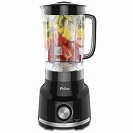

R$ 200
Se você gosta de fazer receitas deliciosas mas não abre mão de praticidade, você precisa de um liquidificador. E sabendo disso a Mondial trouxe o Liquidificador Easy Power L-550. Disponível na cor preta ele possui copo com 1,5 litros de capacidade útil e 3 lâminas em aço inox, que dão mais eficiência na hora de triturar qualquer alimento, sem contar que o seu copo é resistente a quedas e riscos. Tem duas velocidades, função pulsar e ele é ideal para tarefas básicas, como preparar sucos e vitaminas. Tem potência de 550W e material do copo em polipropileno. E tudo isso com o selo INMETRO, que garante a qualidade e eficiência do produto.